あなたの性格は
『一反木綿』タイプ
風を読み、目標へ一直線！自由を愛するフットワークの鬼。
「あなたはまるで風になびく一反木綿！急に現れてはサッと去っていく、そのフットワークの軽さは天下一品！まさに『イッタン、出たら止まらない！』タイプ。ただ、たまに風向きが悪くて電柱に『イッタン、絡んじゃった！』なんてドジっ子な一面も…？その自由奔放さに、みんな目が離せません！」
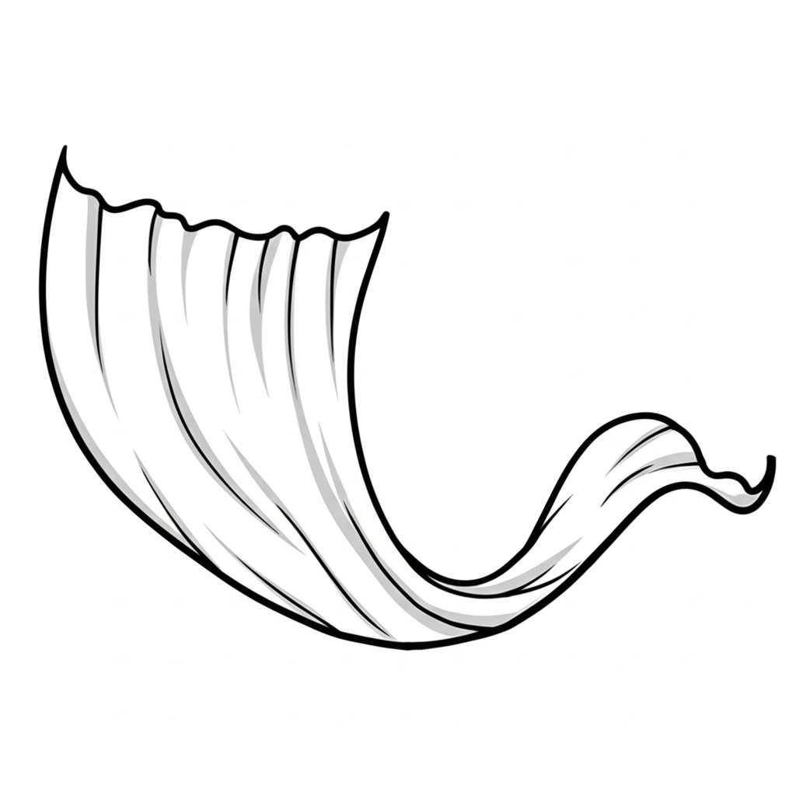鹿児島県肝付町付近に出現。夕暮れ時に空を飛び、人間に巻き付いて窒息させたり顔を覆って苦しめたりする。火や刃物、乾燥に弱い。
あなたの性格は
『一つ目小僧』タイプ
物事を深く見つめる賢者。細やかな気配りで場を和ませる縁の下の力持ち。
「あなたはじっと一点を見つめる一つ目小僧！『え、それ今関係ある？』ってくらい細部まで観察するその眼力は、もはや探偵レベル。まさに『一筋縄ではいかない！』分析力。でも、周りのことに気を取られすぎて、たまに大事なことを見落とす…なんてことも、あるとかないとか？『目からウロコ』の発見も多いはず！」
静岡県や南関東地方では2月8日と12月8日の夜にやってくる。額に目が一つしかない小僧の姿をした妖怪で、戸締まりの悪い家をさがして侵入してくる。目のたくさんあるものに弱く、集合体が苦手なようである。
あなたの性格は
『ぬらりひょん』タイプ
カリスマ的な存在感で、いつの間にか人の心を掴む策略家。WEB制作が得意
「あなたはいつの間にか家に上がり込んでいるぬらりひょん！気づけば中心にいるのに、なぜか誰も違和感を感じない。その圧倒的なオーラと図々しさ（褒め言葉！）で、今日もこっそり味噌汁をすすっていますね？まさに『ヌラリと現れ、チャッカリと座る！』名人。お主、『ただ者ではない』爺ですな！」
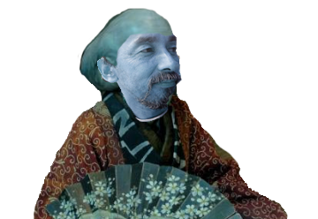１０００年生きている大妖怪。とある目黒の支部を牛耳っているボス。美的センスが抜群で煙草を愛する喫煙家であり愛妻家でもあり猫好きでもある。なんでも詳しすぎて話に困らないが、昭和ギャグを挟んでくると生徒は困ることも。
あなたの性格は
『のっぺらぼう』タイプ
どんな状況にも柔軟に対応！そっと隣に寄り添う共感力の持ち主。
「あなたは顔がないのに存在感があるのっぺらぼう！どんな場所でもどんな人にもスッと馴染む適応能力は素晴らしいの一言。まるで『のっぺら、と何でもこなす！』変幻自在の達人。あまりに馴染みすぎて、集合写真で『あれ、この人誰だっけ？』ってなることも…？個性は内面に『のっぺりと』秘めているタイプですね！」
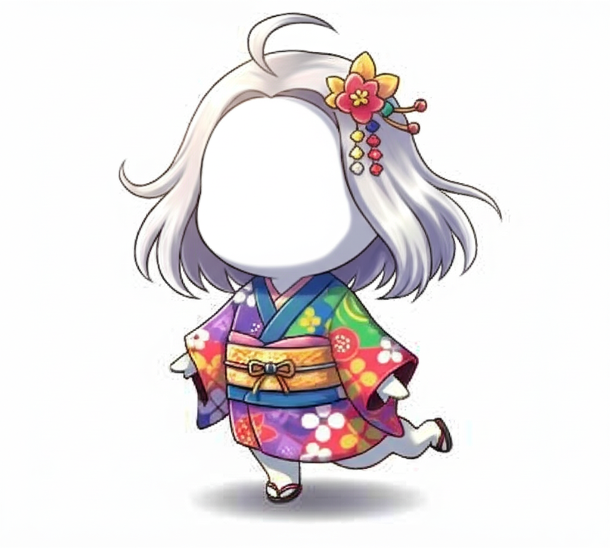全国各地に出現している顔に目や鼻、口がない妖怪。人間のふりをして人に近づき、人を驚かす。たぬきが化けているという逸話も存在。
あなたの性格は
『ぬりかべ』タイプ
揺るぎない信念を持つ、信頼の厚い守護神。一度決めたらやり通す堅実派。
「あなたは道を塞ぐぬりかべ！一度決めたらテコでも動かないその信念、まさに鉄壁です。少々頑固すぎて『塗り固められた』意見を変えないこともありますが、その揺るぎなさが皆の安心材料に。動かない要塞って、かっこいいですよね！まさに『壁にぶつかっても、動じない！』タイプ！」
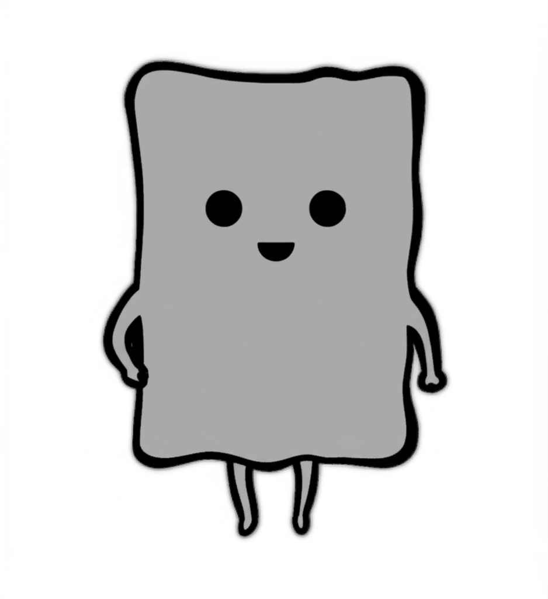高知県幡多郡の妖怪。海沿いによく出没すると言われ、壁の姿をしている。夜道を歩く者の前に突然立ちはだかり、行く手を遮ると言ういたずらをする。
あなたの性格は
『がしゃどくろ』タイプ
目標を定めると一直線！困難を打ち破る、底知れないパワーの持ち主。
「あなたは骨の髄までエネルギッシュながしゃどくろ！目標に向かって突き進む姿は、まるで暴走列車。周囲を圧倒する迫力で、『ガシャガシャ』と音を立てながら進みます。たまに『ごめん、ちょっと道あけて！』と言われるかもしれませんが、その情熱が道を切り開く原動力です。でも、無理しすぎて『骨抜き』になっちゃダメですよ！」
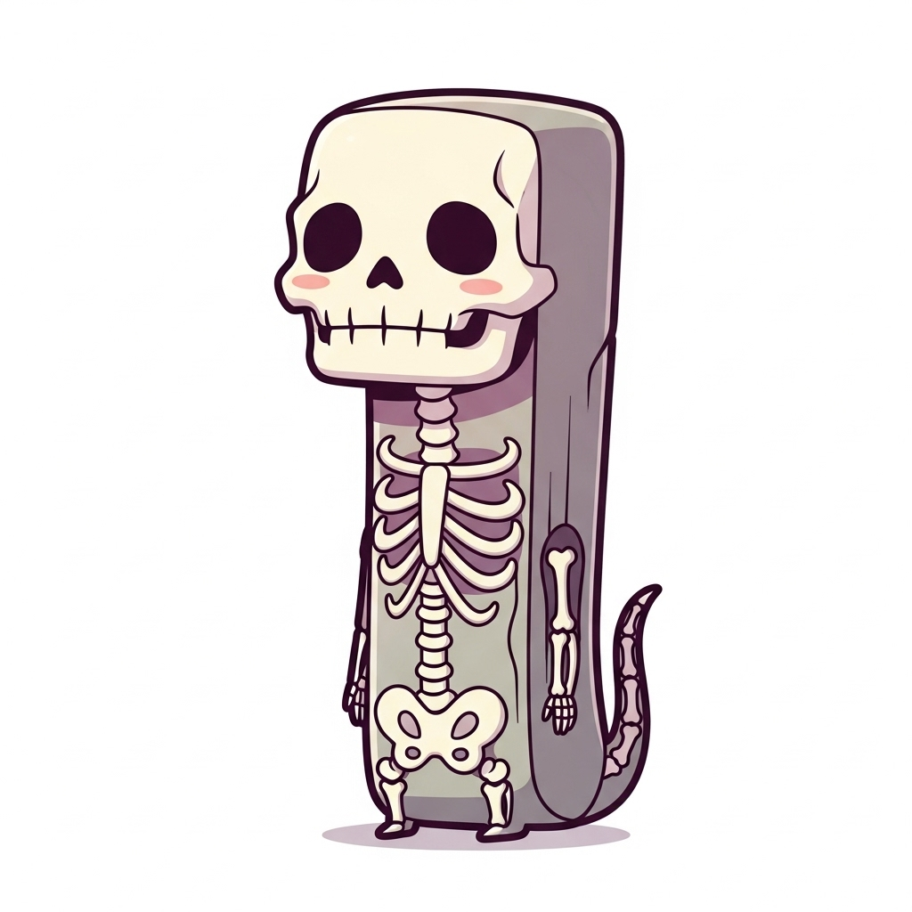備後国（広島県）に現れる妖怪。戦死者や野垂れ死にした者など、埋葬されなかった死者たちの骸骨や怨念が集まって巨大な骸骨の姿になったとされる。夜中にガチガチという音を立ててさまよい歩き、生者を見つけると襲いかかり、握りつぶして食べる。
あなたの性格は
『河童』タイプ
ユニークな発想で周りを和ませるムードメーカー。知的好奇心旺盛な自由人。
「あなたはキュウリが大好きな河童！好奇心旺盛で、面白いことにはすぐ首を突っ込みます。まさに『カッパつな』探究心！でも、ちょっとお皿が乾燥すると元気がなくなっちゃう繊細な一面も…？水場が落ち着くのは、『カッパつ』できないから…なんちゃって！」

日本各地に伝承があり主に水辺に棲んでいる。子供くらいの背丈で、頭に皿を持ち、カメのような甲羅を背負い、手足には水かきがある。相撲が好きで、人を川に引きずり込むなどの悪戯をすることも。
あなたの性格は
『海坊主』タイプ
動じない心で周囲を包み込む、頼れる存在。深淵な思考の持ち主。
「あなたは海のように雄大な海坊主！普段は物静かで何を考えているか分かりませんが、一旦怒ると嵐を巻き起こすレベル。そのスケールの大きさに、周りはただただ畏敬の念を抱きます。まさに『海の底から、どーん！』と影響を与える存在。たまには顔を見せて、みんなを『安心させて』あげてくださいね！」
日本各地に伝承があり、海に出没。多くは夜間に現れ、それまでは穏やかだった海面が突然盛り上がり黒い坊主頭の巨人が現れて、船を破壊するとされる。櫓で殴ると「アイタタ」などと悲鳴をあげるという。弱点は煙草の煙であり、運悪く出会ってしまった際はこれを用意しておけば助かるという。
あなたの性格は
『天狗』タイプ
自分を信じ、高みを目指す孤高のリーダー。困難にも臆さない揺るぎない精神の持ち主。
「あなたは鼻が高い天狗！プライドが高く、自分にも他人にも厳しいストイックな完璧主義者。ちょっと高飛車に見られることもありますが、実はその鼻の奥には熱い情熱が詰まっています。まさに『天から舞い降りた、グレートな存在！』。でも、あまりに高慢だと、『鼻をへし折られる』…なんてことはないはず！」
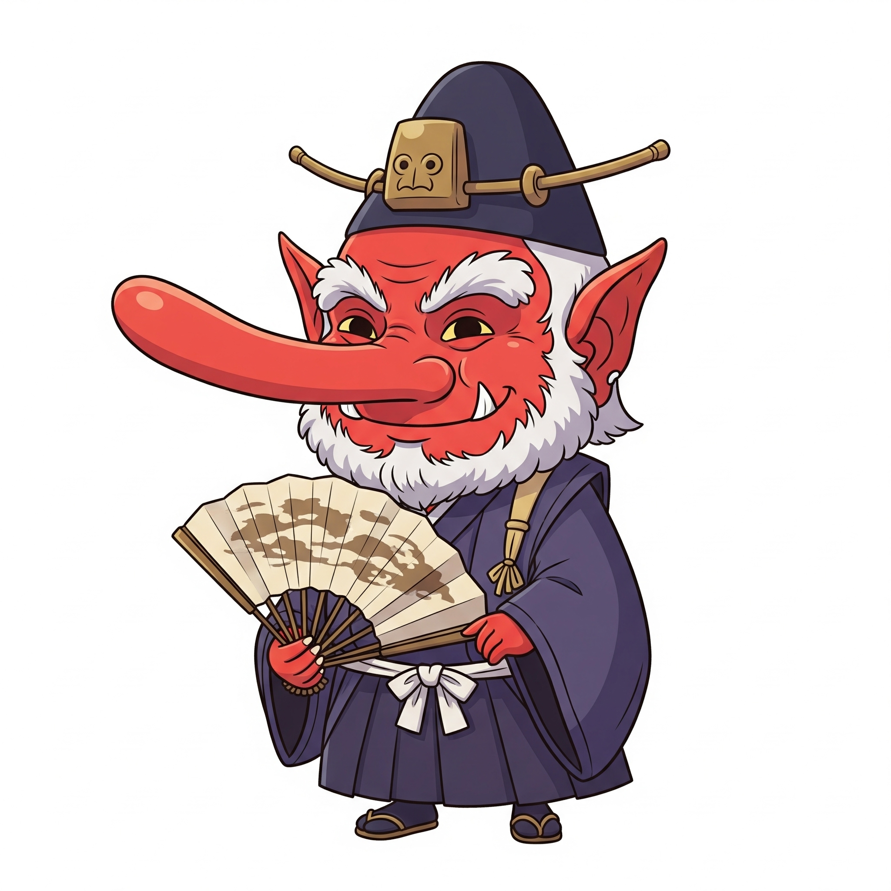山伏の服装で赤ら顔で鼻が高く、翼があり空中を飛翔するとされる。俗に人を魔道に導く魔物とされ、外法様ともいう。天狗は慢心の権化とされ、鼻が高いのはその象徴とも考えられる。教えたがり魔でもある。京都の鞍馬山、神奈川の 大山、長野の飯縄山、滋賀の比叡山の伝承が有名。
あなたの性格は
『かまいたち』タイプ
研ぎ澄まされた感覚で、どんなことも器用にこなすマルチタスクの達人。
「あなたは風のように素早いかまいたち！何でも器用にこなすマルチタレントですが、気づけばシュッとどこかへ消えていることも。まさに『鎌で刈り取るように、サッと問題を解決！』。そのクールな振る舞いはかっこいいけど、たまには立ち止まって深呼吸も忘れずに！切り傷に『注意、怠るな！』です。」
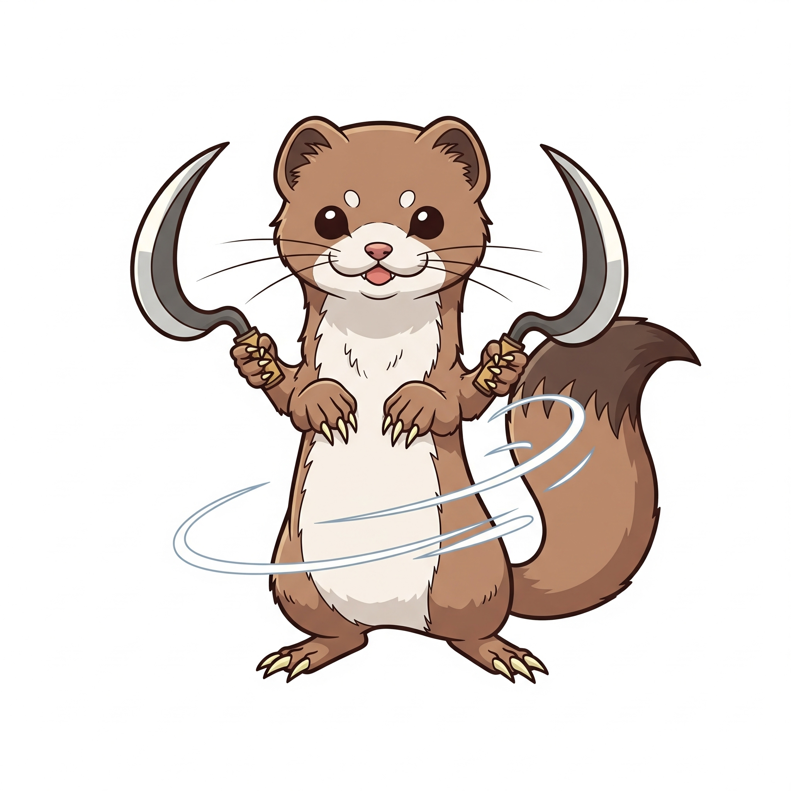日本各地に伝承があり、つむじ風に乗って現われて人を切りつける。これに出遭った人は刃物で切られたような鋭い傷を受けるが、痛みはなく、傷からは血も出ないともされる。
あなたの性格は
『子泣きじじい』タイプ
甘えん坊に見えて、実は芯が強い戦略家。持ち前の粘り強さで道を切り開く。
「あなたは重い愛をぶつける子泣きじじぃ！泣きながら甘えてくるかと思えば、その体重で相手を動けなくする強者。最初は戸惑われるかもしれませんが、その純粋な甘えと時折見せる知恵に、みんなはメロメロ（物理的に）。まさに『泣き落としのプロ』！でも、『泣き止んだら、じいっと見つめる』のはやめてくださいね！」
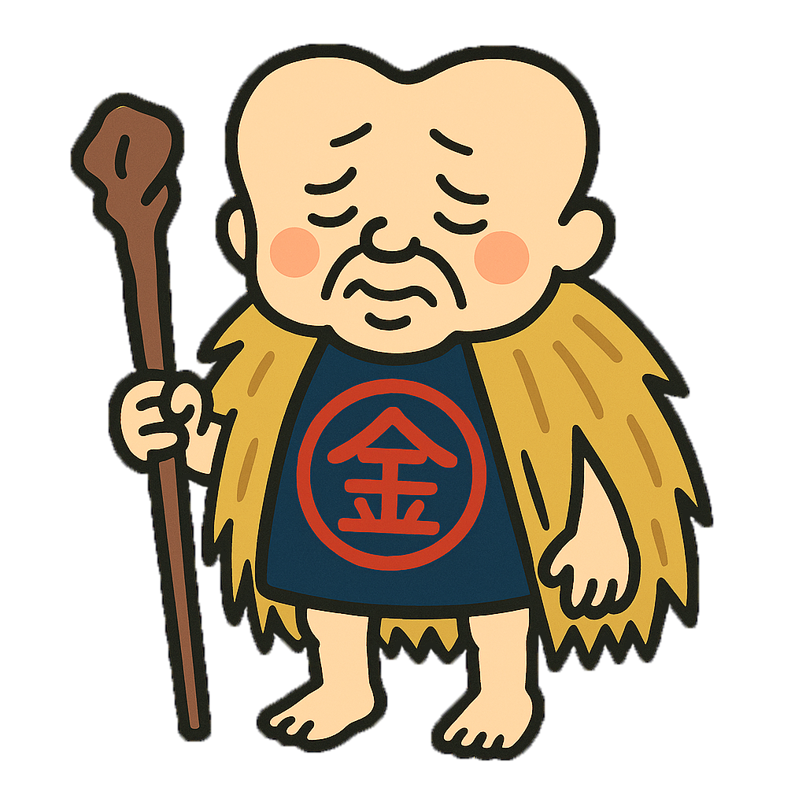徳島県三好市山城町付近に出現。老人の姿だが、夜道で赤ん坊のような産声をあげる。泣いている子泣き爺を見つけた通行人が憐れんで抱き上げると、体重が次第に重くなり、手放そうとしてもしがみついて離れず、遂には命を奪ってしまうとされている。
あなたの性格は
『鬼』タイプ
揺るぎない信念と情熱で、周囲を巻き込むパワフルなカリスマ。
「あなたはツノがチャームポイントの鬼！力強く、情熱的で、思ったことはハッキリ言う一本気な性格。まさに『鬼に金棒、あなたの情熱！』。たまにその正直さがぶつかることもありますが、本当は情に厚く、仲間思いの優しい心を持っています。でも豆は投げないでくださいね！『鬼は外、福は内』って言わないで！」

日本各地に伝承があり、京都の大江山では酒吞童子の伝説が残っている。香川県の鬼ヶ島は昔話でも有名である。時代とともに恐ろしい存在から、時には祭りや伝統芸能で親しまれる存在へと変化してきている
あなたの性格は
『小豆婆』タイプ
みんなの幸せを願い、ついつい世話を焼いてしまう情深いおふくろタイプ。
「あなたは小豆を煮るのが得意なあずきばばぁ！皆の世話を焼くのが大好きで、気づけばあなたの周りには人が集まっています。ちょっとお節介なところもありますが、『これも愛だよ！』と笑顔で乗り切る肝っ玉の持ち主。まさに『小豆を煮るほど情熱的！』。手作りお菓子は絶品で、みんな『小豆なくちゃ、生きていけない！』ってなるかも？」
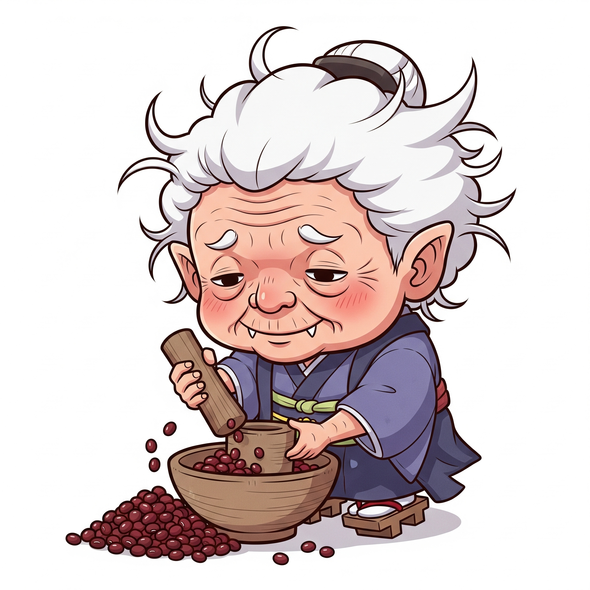宮城県から関東地方にかけて出現する妖怪。川のほとりなどで「ショキショキ」と小豆を研ぐような音を立てて研いでおり、この音に近づくと水の中に引きずり込まれる
あなたの性格は
『化け猫』タイプ
予測不能な行動で周囲を魅了する、ミステリアスな小悪魔。
「あなたはツンデレな化け猫！気まぐれで自由奔放、掴みどころがないミステリアスさが魅力です。たまに猫のようにゴロゴロ甘えるかと思えば、急に爪を研ぎ始める予測不能な一面も…？その小悪魔っぷりに、みんなは『化かされちゃう！』。まさに『猫の手も借りたいくらい、人気者！』ですね！」
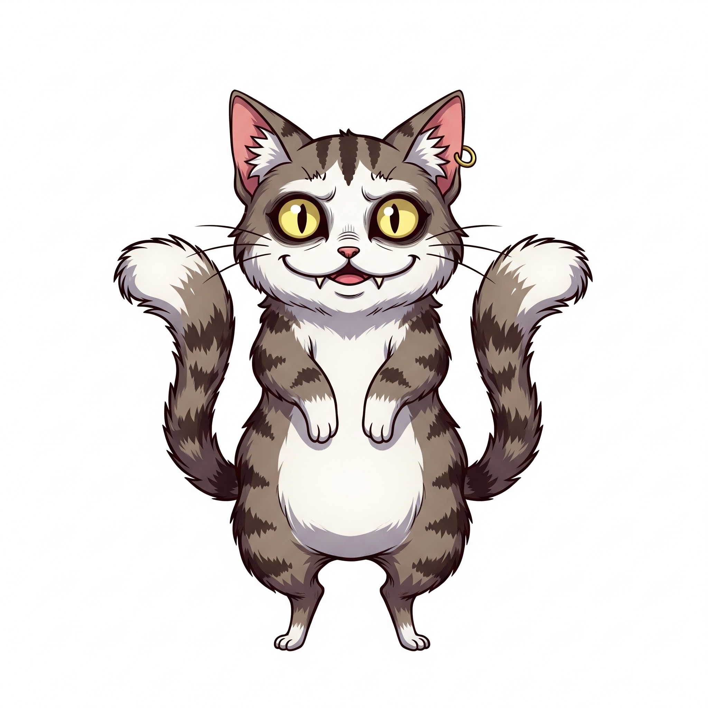日本各地に化け猫の伝説が残されており、佐賀県の鍋島の化け猫騒動、有馬の猫騒動、岡崎の猫騒動が三大猫騒動として著名。年老いた猫が妖怪化したもので、人に化けたり、言葉を話したり、人を祟ったり、死体を操ったりするなどの能力を持つ。
あなたの性格は
『山姥』タイプ
大地のような包容力と、いざという時のたくましさを持つ頼れる存在。
「あなたは森の母、山姥！どんな困難も乗り越えるたくましさと、大地のような包容力を持っています。まさに『山のように、動じない！』大物感。普段はちょっと強面ですが、実は困っている人を見ると放っておけない優しい心の持ち主。でも、うっかり迷い込むと、しばらく『山から帰してもらえない』かも…？（愛情深すぎ！）」
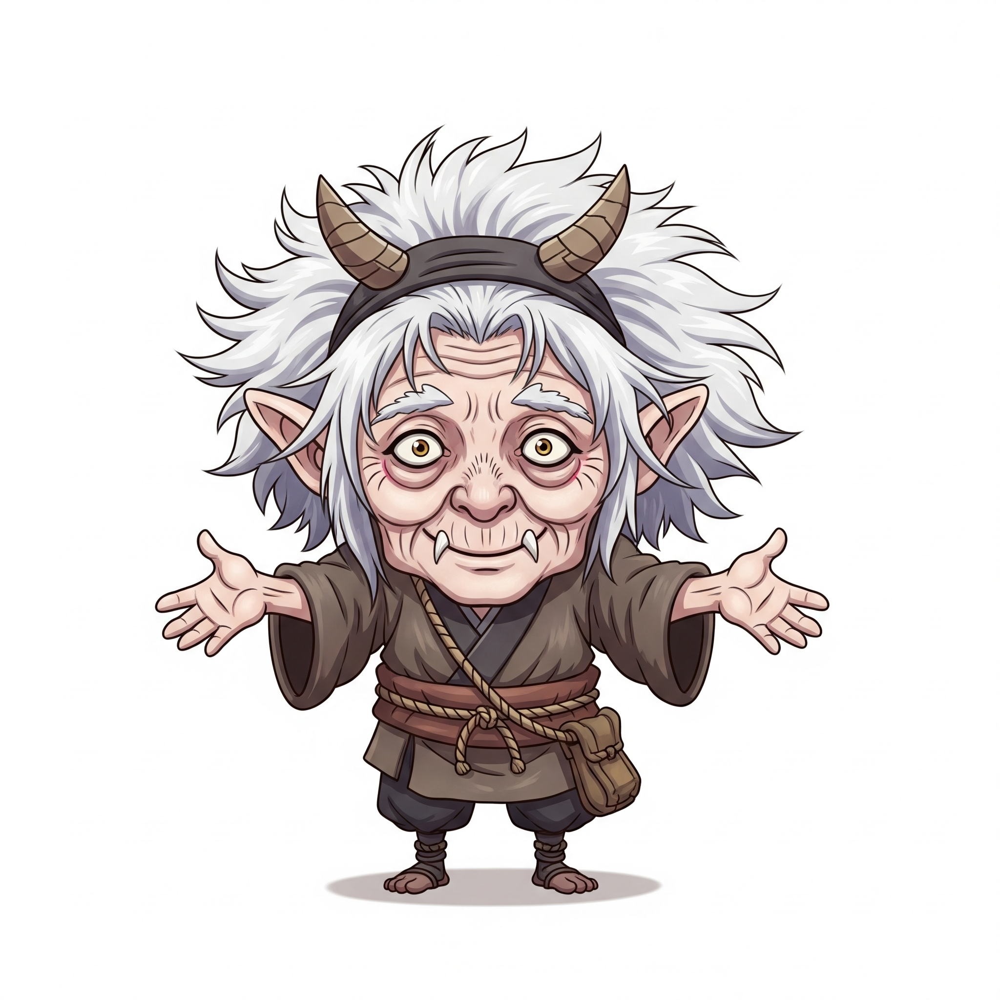日本各地に伝承があり、奥山に棲む老女の怪。山の中で道に迷った旅人に宿を提供し、最初は優しい婦人の姿で食事を与えるなどするが、旅人が夜に寝たところで食い殺す
あなたの性格は
『から傘お化け』タイプ
ユニークな発想と遊び心で、周囲を明るく照らすおちゃめな人気者。
「あなたは雨の日が待ち遠しい唐傘お化け！片足ピョコピョコ、ユーモアたっぷりで皆を和ませるムードメーカーです。まさに『唐突に現れて、傘立てを賑わせる！』存在。ちょっとお調子者なところもありますが、その陽気さでどんな曇り空も晴れやかに！雨が降ったら、ぜひ『相合い傘にお誘い、お化け！』」
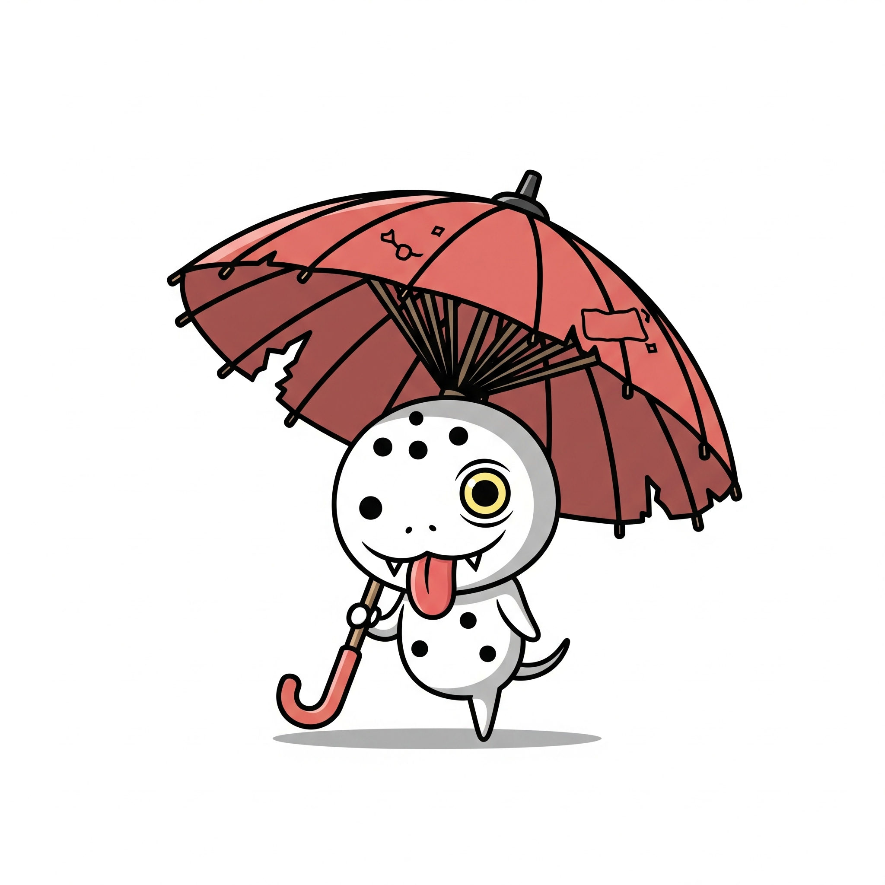新潟県笹神村付近に出没。捨てられた唐傘が恨みの力で妖怪へと変貌。もっとも古いものは室町時代の絵巻物に登場するそうですが、人に危害を加えたりといった具体的な逸話は残っていない
あなたの性格は
『お歯黒べったり』タイプ
多くを語らずとも人を惹きつける、深みのある魅力の持ち主。
「あなたは顔のインパクトが強すぎるお歯黒べったり！多くを語らずとも、その独特な雰囲気で周囲を圧倒します。何を考えているか分からないミステリアスさに惹かれる人も多いでしょう。まさに『お歯黒なだけに、奥が深い！』。でも、笑顔を見せるときは、ぜひそっと目も開けてあげてくださいね…！『べったり』と寄り添う優しい心を持っています。」
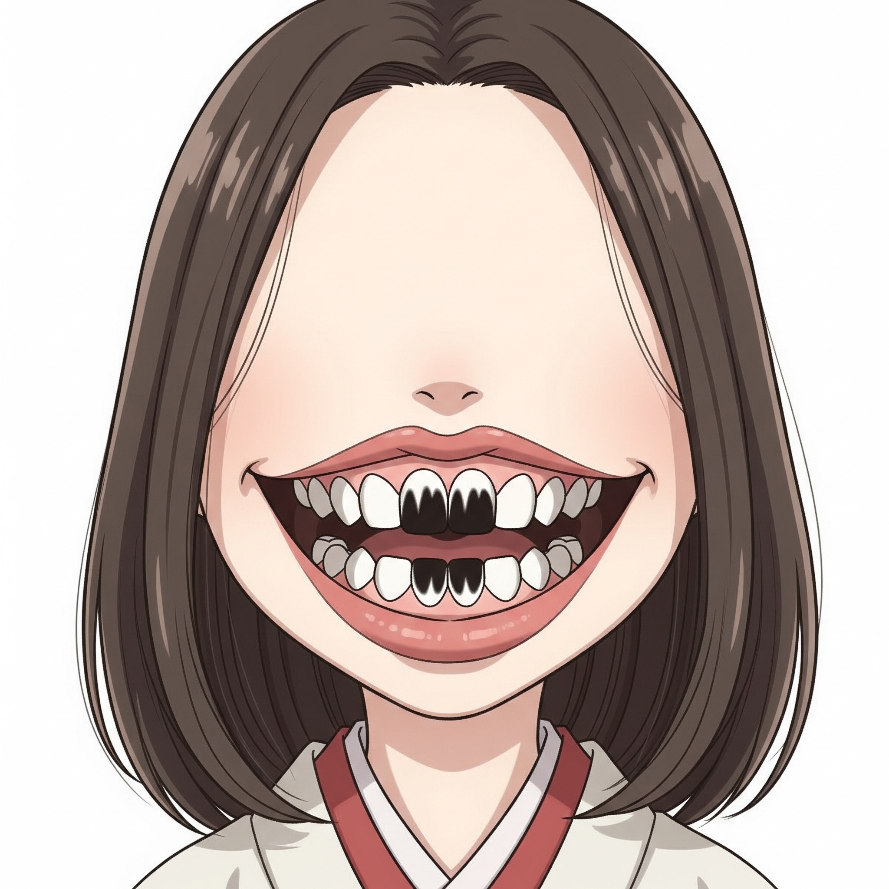東北地方を中心に出現。目も鼻も無い顔に、お歯黒を付けた大きな口だけがある女の姿をした妖怪。自身の顔面を見せることによって人間を驚かす。
あなたの性格は
『九尾』タイプ
知性と美しさを兼ね備えた、人々を魅了する天性のカリスマ。
「あなたは知性と美貌を兼ね備えた九尾の狐！人を魅了する術に長けていて、気づけばみんなあなたの虜。変幻自在な才能で、どんな場面でも華麗に立ち回ります。まさに『キューンと胸を締め付ける、魅惑の存在！』。ただ、シッポが増えすぎると、寝返りが打ちにくいのが玉にキズ…『九死に一生を得る』ほど大変？」
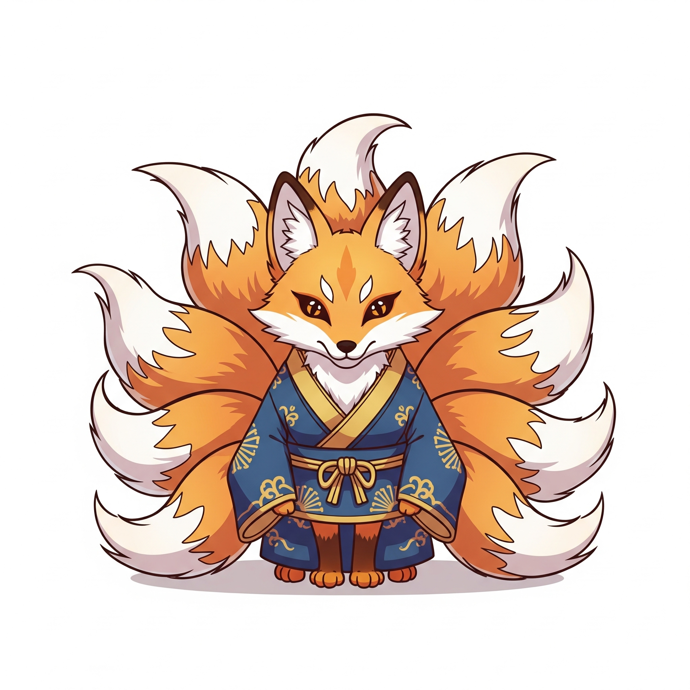9本の尾をもつキツネの霊獣または妖怪。中国では長寿と変身能力に優れた存在として尊ばれていましたが、日本では玉藻前という絶世の美女に化けた妖怪として恐れられている。
あなたの性格は
『人魚』タイプ
豊かな感受性で人々の心に寄り添う、優しさに満ちたロマンチスト。
「あなたは歌声が美しい人魚！繊細で感受性豊か、ロマンチックな夢を追いかけるタイプです。たまに陸に上がって冒険したくなりますが、やっぱり水の中が一番落ち着くみたい。まさに『人間らしさと、魚らしさのハイブリッド！』。魚介類を食べるのは、ちょっと『人ごとのように思えない』複雑な気持ちになりますね…？」
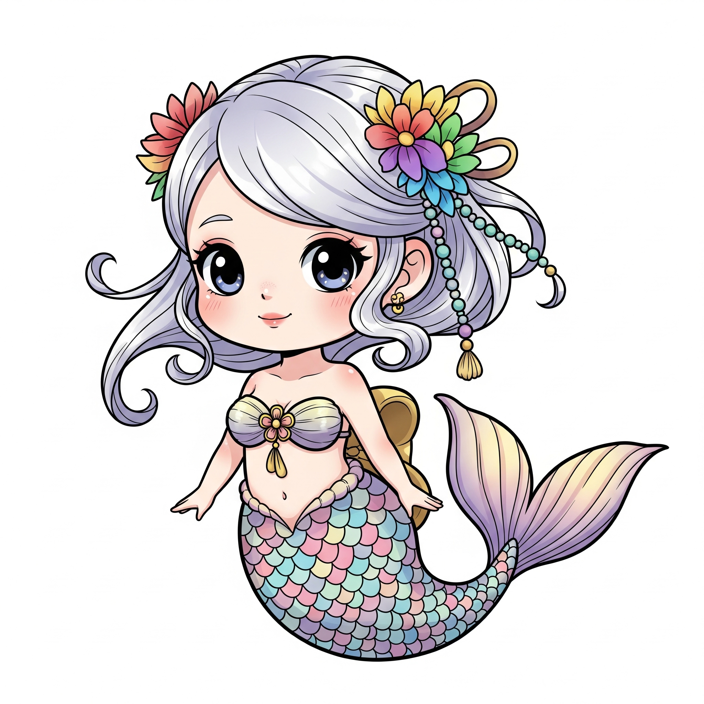日本海沿岸の地域を中心に出没。死んでもなお美貌を保つ女性の妖怪で、肉を食すと不老不死になれるといわれる。和歌山県には人魚のミイラが寺宝として残されている。
あなたの性格は
『座敷童』タイプ
そこにいるだけで場が和む、みんなから愛される幸運の使者。
「あなたはお家に福を呼ぶ座敷童！そこにいるだけで場がパッと明るくなる、愛されキャラの代表格です。無邪気で純粋な笑顔は、周りの疲れを吹き飛ばします。まさに『座っているだけで、福が来る！』奇跡の存在。ただ、たまに隠れすぎて『あれ、どこ行った？』と心配されることも。でも、いなくなると寂しいから、どうかずっと『座ってて！』」
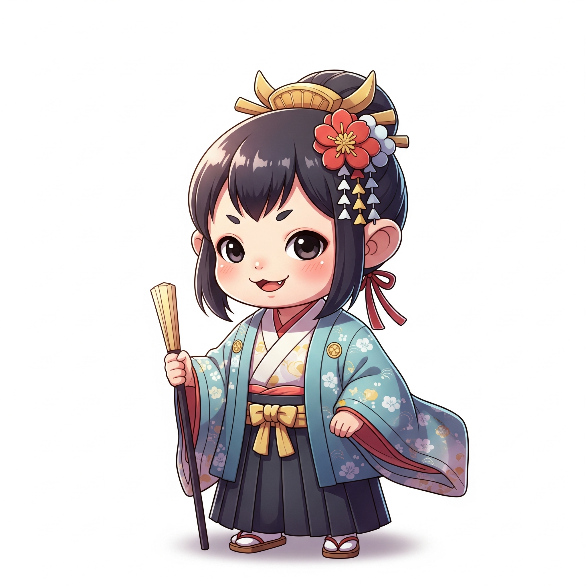岩手県付近に出現。座敷または蔵に住む神と言われ、家人に悪戯を働くこともあるが、見た者には幸運が訪れたり家に富をもたらすなどの伝承がある。
あなたの性格は
『雪女』タイプ
クールな印象の裏に熱い情熱を秘めた、芯の強いミステリアスな存在。
「あなたはクールビューティーな雪女！一見近寄りがたいオーラを放っていますが、心の中には熱い情熱を秘めています。その神秘的な魅力で人々を惹きつけますが、安易に触れると『雪崩のように』凍りつくかも…？（冗談です！）まさに『雪が降るほど、美しい！』。でも、夏はちょっと苦手かもしれませんね、『溶けちゃいます』から！」
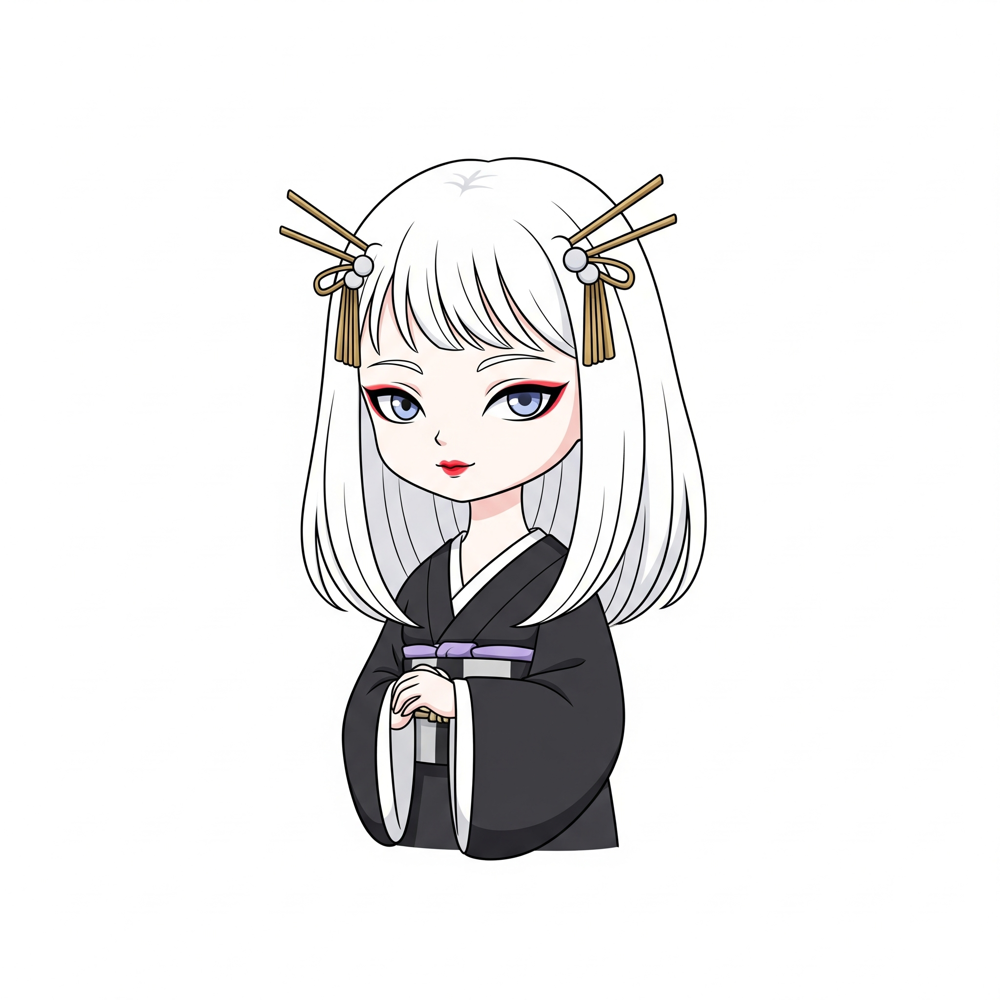日本各地に伝承があるが、特に新潟県、山形県、長野県などの雪深い地域に出現。美しい白い姿で現れ、冷たい息を吹きかけて人を凍死させる。
あなたの性格は
『キジムナー』タイプ
天真爛漫な遊び心で、周りの心を解き放つ自由な魂の持ち主。
「あなたはガジュマルの木から生まれたキジムナー！好奇心旺盛でいたずら好き、いつでも遊び心を忘れない自由人です。魚の目玉が大好物というユニークな一面も。まさに『キジも鳴くほど、陽気な性格！』。純粋で裏表がないので、みんなから可愛がられる人気者です。でも、お返しはちゃんと『ナ』！」
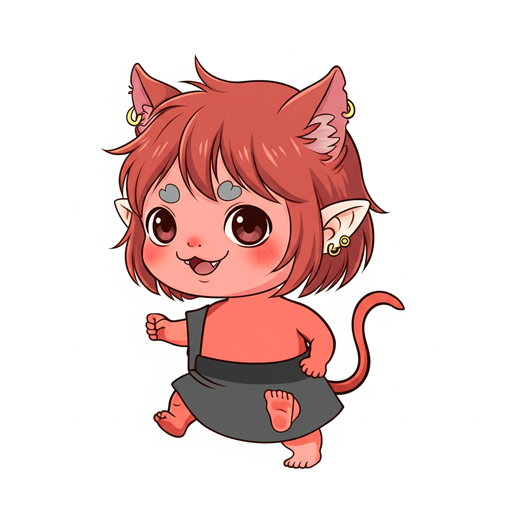沖縄に出現する妖怪。ガジュマルの木の精霊でもある。いたずら好きで、人懐っこい性格である一方、時には災いを招くこともあるとされています。キジムナーと仲良くなると、幸運や富をもたらしてくれると言われているが怒らせると…
あなたの性格は
『アマビエ』タイプ
穏やかな癒しのオーラで、人々に安心と希望をもたらす心のヒーラー。
「あなたは疫病退散のアイドル、アマビエ！困っている人を見ると放っておけない、慈愛に満ちた心の持ち主です。その癒しのオーラと、少しユニークな見た目で、皆に笑顔と希望を与えます。まさに『アマビエて、平和を願う！』。最近、イラストにされがちですが、本物も相当『アマ〜い』キュートさですよ！」

熊本県にあたる肥後国海上に出現。長いくちばしと鱗を持つ、三本足をした半人半魚の妖怪。 疫病退散のご利益があり、コロナをきっかけに日本で有名に
あなたの性格は
『ろくろ首』タイプ
知的好奇心旺盛で、どんなことにも首を突っ込む探究者。
「あなたは首が伸びるろくろ首！どんなに遠い情報でもキャッチする、並外れた好奇心の持ち主です。狭いところもグイッと首を伸ばして覗き見…いや、情報収集するのが得意。まさに『首を長くして待っていた！』情報収集のプロ。たまに首が『ろくろっ首』になっちゃうのがご愛嬌。その柔軟な発想力で、今日も新たな発見をしていますね！」
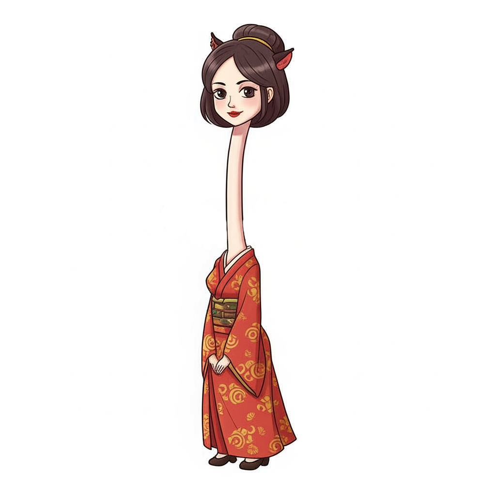日本各地に伝承は残っているが、奈良県吉野郡の吉野山奥には「ろくろ首村」があり、住人は皆ろくろ首であるという噂も…。姿かたちは人間と殆ど変わらないが、首が長く伸びると言う能力を持っている。
あなたの性格は
『ぬらりひょん』タイプ
カリスマ的な存在感で、いつの間にか人の心を掴む策略家。WEB制作が得意
「あなたはいつの間にか家に上がり込んでいるぬらりひょん！気づけば中心にいるのに、なぜか誰も違和感を感じない。その圧倒的なオーラと図々しさ（褒め言葉！）で、今日もこっそり味噌汁をすすっていますね？まさに『ヌラリと現れ、チャッカリと座る！』名人。お主、『ただ者ではない』爺ですな！」
１０００年生きている大妖怪。とある目黒の支部を牛耳っているボス。美的センスが抜群で煙草を愛する喫煙家であり愛妻家でもあり猫好きでもある。なんでも詳しすぎて話に困らないが、昭和ギャグを挟んでくると生徒は困ることも。